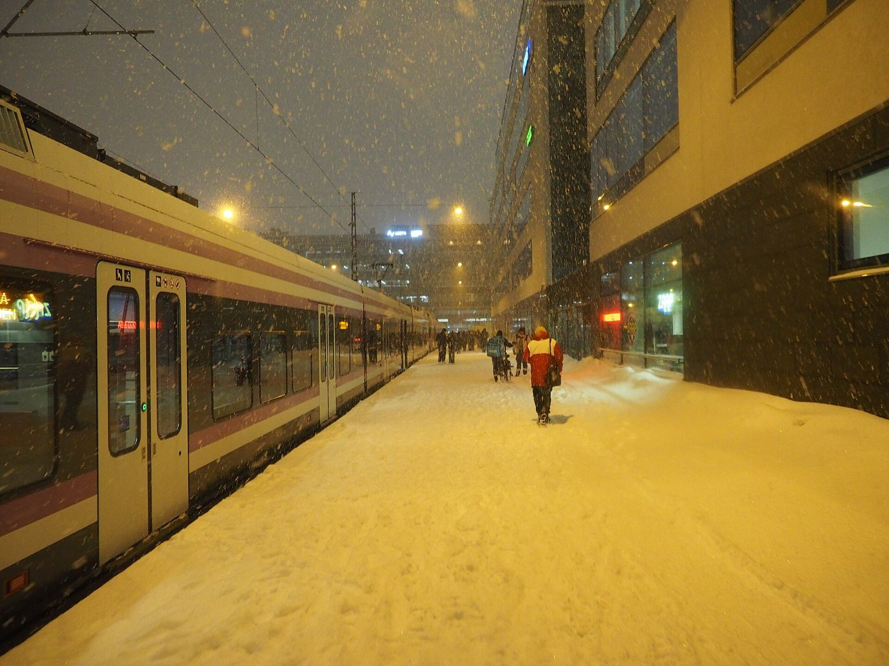
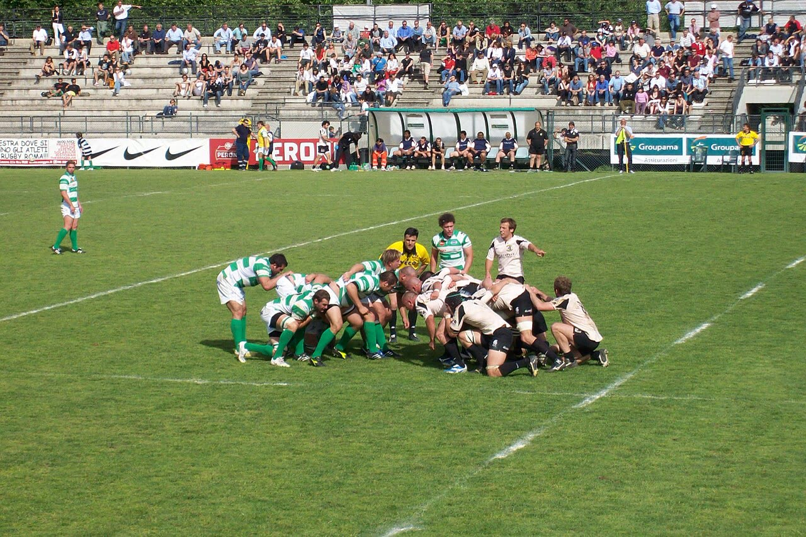
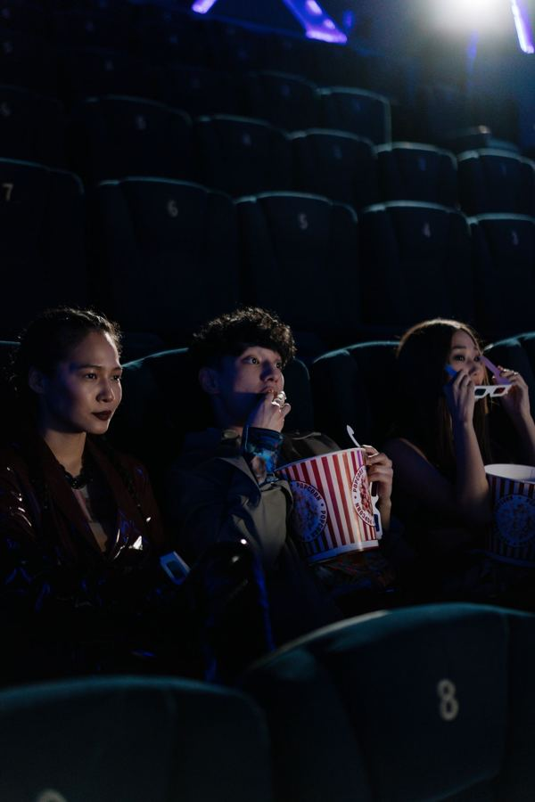
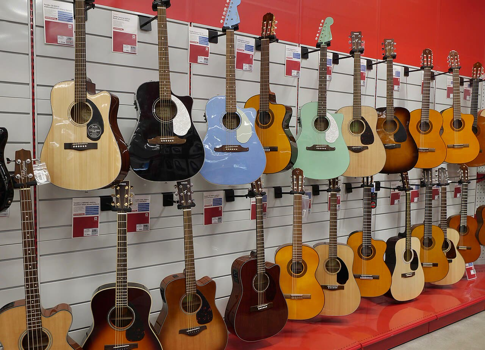
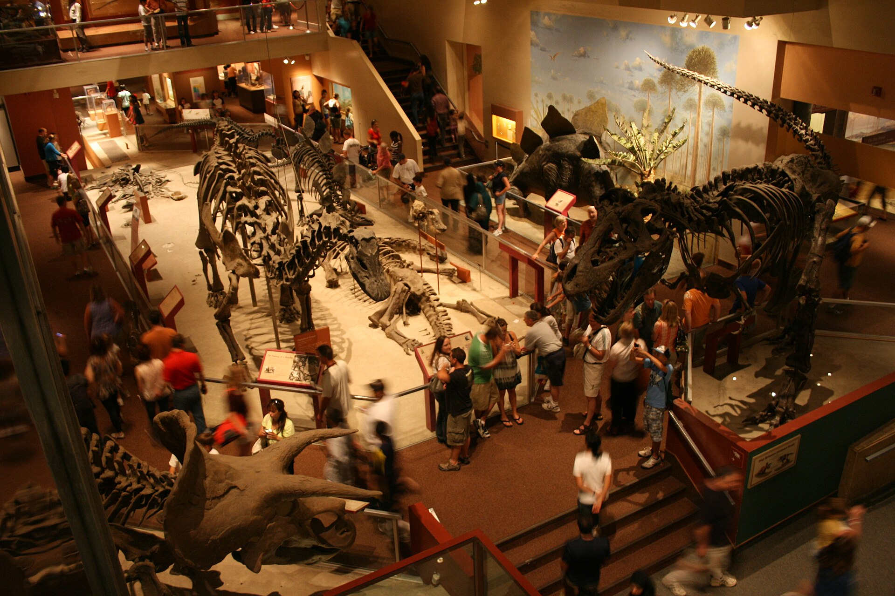
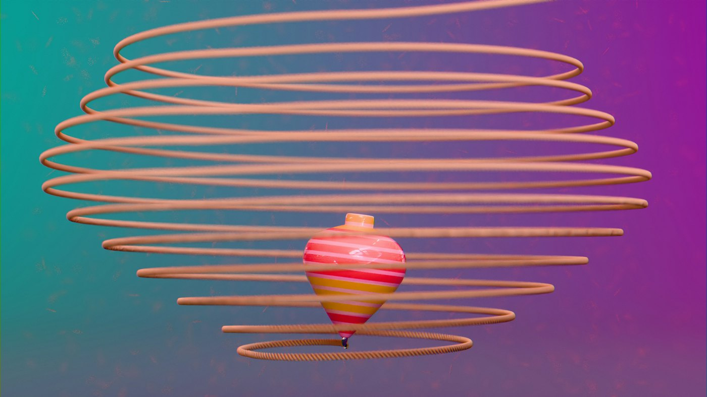

Ma première simulation d'examenMy first mock exam
Salut Ezra ! 👋
Compréhension de l'oralListening





Compréhension des écritsReading
Pour les 10-14 ans. Attention : il faut savoir nager !
For 10 to 14-year-olds. Careful: you must be able to swim!
Apprends à jouer tes chansons préférées. On te prête une guitare !
Learn to play your favourite songs. We lend you a guitar!
Tournois de Fortnite et de Mario Kart tous les mercredis.
Fortnite and Mario Kart tournaments every Wednesday.
Viens voir des squelettes géants et des fossiles !
Come and see giant skeletons and fossils!

De : Lucas · À : Ezra · Objet : Vacances ! From: Lucas · To: Ezra · Subject: Holidays!
Salut Ezra ! Pendant les vacances de Pâques, mes parents louent un chalet au bord du lac d'Annecy, à la montagne. Tu veux venir avec nous du 12 au 19 avril ? Hi Ezra! During the Easter holidays, my parents are renting a chalet by Lake Annecy, in the mountains. Do you want to come with us from 12th to 19th April?
On va faire du kayak et de l'escalade. Apporte des chaussures de sport et un pull, parce que le soir, il fait froid ! We're going to go kayaking and climbing. Bring trainers and a jumper, because it's cold in the evening!
Réponds-moi vite par SMS ! Lucas Answer me quickly by text! Lucas
PISCINE MUNICIPALE · RÈGLEMENT TOWN SWIMMING POOL · RULES
✔ Le bonnet de bain est obligatoire. ✔ A swimming cap must be worn.
✔ Douche obligatoire avant d'entrer dans l'eau. ✔ You must shower before going into the water.
✘ Il est interdit de courir autour du bassin. ✘ Running around the pool is not allowed.
🕘 Ouvert du lundi au samedi, de 9 h à 19 h. Fermé le dimanche. 🕘 Open Monday to Saturday, 9 am to 7 pm. Closed on Sundays.

Une classe chez les dinosaures ! A class visits the dinosaurs!
Mardi dernier, les élèves de 6e B du collège Victor-Hugo, à Lille, ont visité le musée d'histoire naturelle. Ils ont pris le bus à 8 heures et ils sont arrivés au musée à 9 h 30. Last Tuesday, the Year 7 pupils of Victor-Hugo secondary school, in Lille, visited the natural history museum. They took the bus at 8 o'clock and arrived at the museum at 9.30.
D'abord, un guide leur a montré le squelette d'un énorme dinosaure de 25 mètres ! Ensuite, les élèves ont participé à un atelier : ils ont fabriqué des fossiles en plâtre. First, a guide showed them the skeleton of a huge 25-metre dinosaur! Then the pupils took part in a workshop: they made plaster fossils.
« C'était génial ! Plus tard, je veux devenir paléontologue ! », raconte Nathan, 11 ans. Le mois prochain, la classe va visiter un zoo. “It was brilliant! Later I want to become a palaeontologist!” says Nathan, aged 11. Next month, the class is going to visit a zoo.
Production écriteWriting
- Commence par « Salut Théo ! »Start with “Salut Théo !” (Hi Théo!)
- Où ? Avec qui ? → « Samedi dernier, je suis allé au stade de… avec… »Where? Who with? → “Last Saturday, I went to … stadium with…”
- Qu'est-ce que vous avez fait ? → « Nous avons regardé… nous avons mangé… nous avons chanté… »What did you do? → “We watched… we ate… we sang…”
- Ton impression → « C'était génial / super / un peu long… parce que… »Your impression → “It was brilliant / great / a bit long… because…”
- Termine par « À bientôt ! » et ton prénom.Finish with “À bientôt !” (See you soon!) and your name.
- Remercie : « Merci pour ton invitation ! »Say thank you: “Thanks for your invitation!”
- Refuse poliment : « Je suis désolé, mais je ne peux pas… »Say no politely: “I'm sorry, but I can't…”
- Explique pourquoi : « … parce que j'ai un concert de guitare. »Explain why: “… because I've got a guitar concert.”
- Propose autre chose : « Tu veux aller… avec moi dimanche ? »Suggest something else: “Do you want to go … with me on Sunday?”
- Termine : « Réponds-moi vite ! À bientôt, Ezra »Finish: “Answer me quickly! See you soon, Ezra”
Production oraleSpeaking
- Quel sport ? Depuis quand ?Which sport? Since when?
- Où et avec qui tu joues ?Where and who do you play with?
- Pourquoi tu aimes ce sport ?Why do you like this sport?
- Quel jeu ? C'est un jeu vidéo ?Which game? Is it a video game?
- Avec qui et quand tu joues ?Who do you play with and when?
- Pourquoi tu l'aimes ?Why do you like it?
